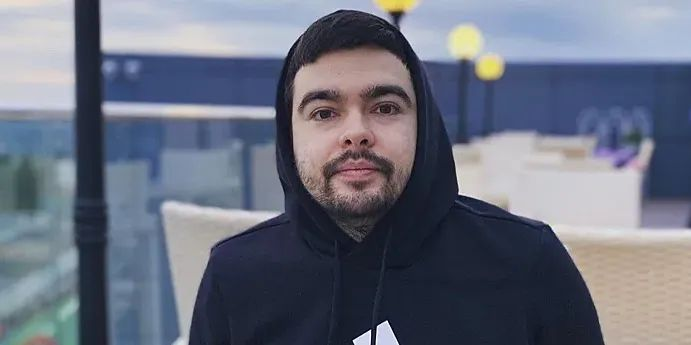

Стрей228... Ужасная правда.
Stray228 — русскоязычный стример, известный благодаря своим трансляциям по Dota 2 на платформе Twitch. До того, как его стримы стали популярными, Олег пробовал себя в роли профессионального игрока в MOBA от Valve, а также занимался бустингом аккаунтов в Доте. Олег Бочаров увлекался компьютерными играми с детства, однако родители не одобряли его хобби, которое сказывалось на зрении и учёбе ребенка. По словам самого Stray228, с Дотой он познакомился примерно в 2003 году и продолжает увлекаться игрой с тех пор. В студенческие годы Олег выступал на небольших LAN-турнирах локального уровня, мечтая о карьере профессионального игрока в Dota 2. В те годы он встречался на соревнованиях с такими будущими «звёздами» Дота-сцены в Восточной Европе, как Роман 'RAMZES666' Кушнарёв, Владимир 'No[o]ne' Миненко, Павел '9pasha' Хвастунов, Илья 'ALOHADANCE' Коробкин и Иван 'VANSKOR' Скороход.
